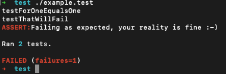

#!/bin/sh
testForOneEqualsOne() {
assertTrue "Someone has changed reality, suddenly 1 does not equal 1!" "[[ 1 -eq 1 ]]"
return 0
}
testThatWillFail() {
assertFalse "Failing as expected, your reality is fine :-)" "[[ 1 -eq 1 ]]"
return 0
}
. shunit2
So we have a script with 3 parts:
|
And the result could look like  |
#!/bin/sh
echo Hello World :-)
sed -i 's/hello/goodbye/' example
sed -i.bak 's/hello/goodbye/' example
#!/bin/sh
testAvailabilityBASH() {
assertTrue "Did not find the bash executable" "[[ -x "$(which 'bash')" ]]"
return 0
}
. shunit2